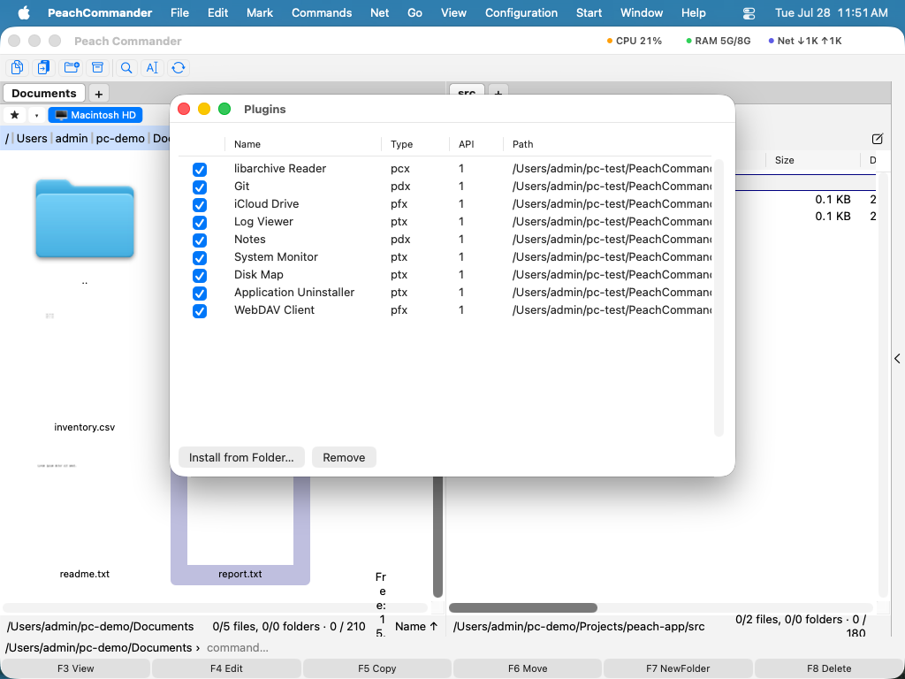

Zásuvné moduly
Zásuvné moduly rozširujú Peach Commander o ďalšie nástroje, formáty súborov a miesta na prehliadanie. Tucet zásuvných modulov je vstavaných, takže ich môžete začať používať ihneď, a jednotlivé zásuvné moduly môžete zapínať alebo vypínať — alebo inštalovať nové — z jedného okna. Zásuvné moduly použite, keď chcete schopnosti nad rámec každodenného kopírovania a prehliadania: vizualizovať, čo zapĺňa disk, pripojiť sa k serveru WebDAV, skontrolovať stav úložiska Git, sledovať systémovú aktivitu a viac.
Zásuvné moduly prichádzajú v niekoľkých podobách: niektoré pridávajú panel alebo bočný panel (zobrazenie), niektoré pridávajú stĺpce do zoznamu súborov, niektoré pridávajú miesto, do ktorého sa navigujete ako disk, a niektoré naučia aplikáciu nový formát archívu. Každý sa povoľuje nezávisle.
Čo pridávajú vstavané zásuvné moduly
Niekoľko zásuvných modulov má vlastnú podrobnú tému pomocníka — pre celý príbeh nasledujte odkaz:
- Mapa disku — vizualizuje, čo zapĺňa priečinok alebo zväzok ako stromovú mapu alebo slnečný lúč, zosúladené s voľným, vyčistiteľným a skrytým miestom, so zberačom na upratovanie.
- Asistent AI — voliteľný, odstrániteľný asistent, ktorý zhŕňa, premenúva, prekladá, vytvára tabuľky a usporadúva súbory v prirodzenom jazyku, na zariadení alebo cez cloudový model.
- Git — zobrazuje stav pracovného stromu každého súboru a aktuálnu vetvu ako stĺpce panela a pridáva ponuku Git pre stav, pripraviť, commit, pull a push.
- System Monitor — živý odpočet procesora, pamäte, disku, siete (a, kde je to dostupné, GPU, batérie, senzorov) v titulnej lište okna, s preklikávateľnými detailnými grafmi.
- Task Manager — pripojí vaše bežiace procesy ako prehliadateľný disk TaskManager; trieďte ich, skúmajte ich ako súbory alebo ich ukončite klávesom Odstrániť.
- Obrazy súborových systémov — otvorí obraz súborového systému (SquashFS, ext, Btrfs, JFFS2, UBIFS, cramfs, initramfs, FAT, exFAT, NTFS) ako archív, vrátane obrazov diskov s viacerými oddielmi. Iba na čítanie a vypnuté, kým ho nezapnete.
- Uninstaller — odstráni aplikáciu aj podporné súbory, vyrovnávacie pamäte a predvoľby, ktoré za sebou nechá, po tom, ako vám presne ukáže, čo zmizne.
Zvyšné vstavané zásuvné moduly sú menšie a nepotrebujú vlastnú stránku:
- Amazon S3 — pripojte sa k Amazon S3 alebo úložisku kompatibilnému s S3 (Sieť ▸ Pripojiť k Amazon S3…) a prehliadajte buckety ako priečinky, s čítaním, zápisom, premenovaním a mazaním. Tajné kľúče sú uchované vo Zvezku kľúčov macOS.
- WebDAV — pripojte sa k serveru WebDAV (Sieť ▸ Pripojiť WebDAV…) a prehliadajte, nahrávajte, sťahujte, premenúvajte a odstraňujte na ňom, ako by to bol priečinok. Heslá sú uchované v zväzku kľúčov macOS.
- iCloud Drive — pridáva položku iCloud Drive do lišty diskov, ktorá skočí priamo do vášho lokálneho priečinka iCloud Drive. Objaví sa iba vtedy, keď je iCloud Drive nastavený na vašom Macu.
- Notes — držte poznámku vedľa ktoréhokoľvek súboru alebo priečinka. Malý odznak ● označuje položky, ktoré ju majú; upravujte poznámky v ukotvenom bočnom paneli Notes alebo v úplnom editore formátovaného textu (Príkazy ▸ Upraviť poznámku…) a prehliadajte ich všetky pomocou Prehľad poznámok….
- Log Viewer — otvorte súbor ako farebne kódovaný, podľa úrovní klasifikovaný, živo sledovaný protokol (Súbor ▸ Zobraziť ako protokol…), s filtrami podľa úrovní, hľadaním a podporou bežných formátov protokolov plus vašich vlastných formátov regex. Zvláda protokoly s viacerými gigabajtmi okamžite.
- Markdown and HTML — stlačte F3 na súbore
.mdalebo.htmla čítajte ho formátovaný namiesto zdrojového textu, s nakreslenými diagramami```mermaida matematikou$…$vysadenou na vašom Macu. Nič sa nestahuje a žiadna časť dokumentu sa nikam neposiela. - CSV Lister — stlačte F3 na súbore
.csvalebo.tsva otvorí sa ako skutočná tabuľka so zoraditeľnými stĺpcami namiesto holého textu. Oddeľovač sa rozpozná automaticky, takže sa zarovnajú aj exporty oddelené bodkočiarkou, a hľadanie v prehliadači nájde hodnoty bunku po bunke. - AI Column — pridáva stĺpec AI Language, ktorý zisťuje dominantný jazyk každého textového súboru na zariadení (pomocou frameworku NaturalLanguage od Apple — nie cloudového modelu).
- Formáty archívov — naučia aplikáciu prehliadať a rozbaľovať viac typov archívov (7z, rodina tar, gzip/bzip2/xz/zstd a RAR, kde je nainštalovaný pomocný nástroj), ktoré sa potom otvárajú ako priečinky.
Zapnutie alebo vypnutie zásuvných modulov
- Vyberte Konfigurácia ▸ Zásuvné moduly… na otvorenie okna zásuvných modulov.
- Každý nainštalovaný zásuvný modul sa objaví v zozname s názvom, typom a zaškrtávacím poľom „Povolené".
- Zaškrtnite alebo zrušte zaškrtnutie poľa na povolenie alebo zakázanie zásuvného modulu. Zmeny sa prejavia ihneď — povolené zásuvné moduly pridajú svoje ponuky, stĺpce a funkcie; zakázané sa držia bokom.

(Obrázok: okno zásuvných modulov, kde povoľujete, zakazujete, inštalujete alebo odstraňujete zásuvné moduly.)Inštalácia nového zásuvného modulu
- Vyberte Konfigurácia ▸ Zásuvné moduly….
- Kliknite na Nainštalovať z priečinka….
- Vyberte balík zásuvného modulu alebo
.zip, ktorý ho obsahuje, a potvrďte. Zásuvný modul sa pridá do zoznamu a povolí.
Odstránenie zásuvného modulu
- V okne zásuvných modulov označte zásuvný modul v zozname.
- Kliknite na Odstrániť. Vstavané funkcie nie sú ovplyvnené; odstráni sa iba vybraný zásuvný modul.
Poznámky
- Zoznam zásuvných modulov zobrazuje typ a verziu rozhrania každého zásuvného modulu vedľa názvu a umiestnenia, takže môžete potvrdiť, čo je nainštalované.
- Ak nie je nainštalovaný žiadny zásuvný modul, okno zobrazí krátku výzvu, ktorá vás nasmeruje k Nainštalovať z priečinka….
- Niektoré zásuvné moduly pridávajú vlastné stĺpce, položky ponuky alebo miesta panela iba počas toho, čo sú povolené. Ak očakávaná funkcia chýba, skontrolujte, či je zásuvný modul tu zapnutý.